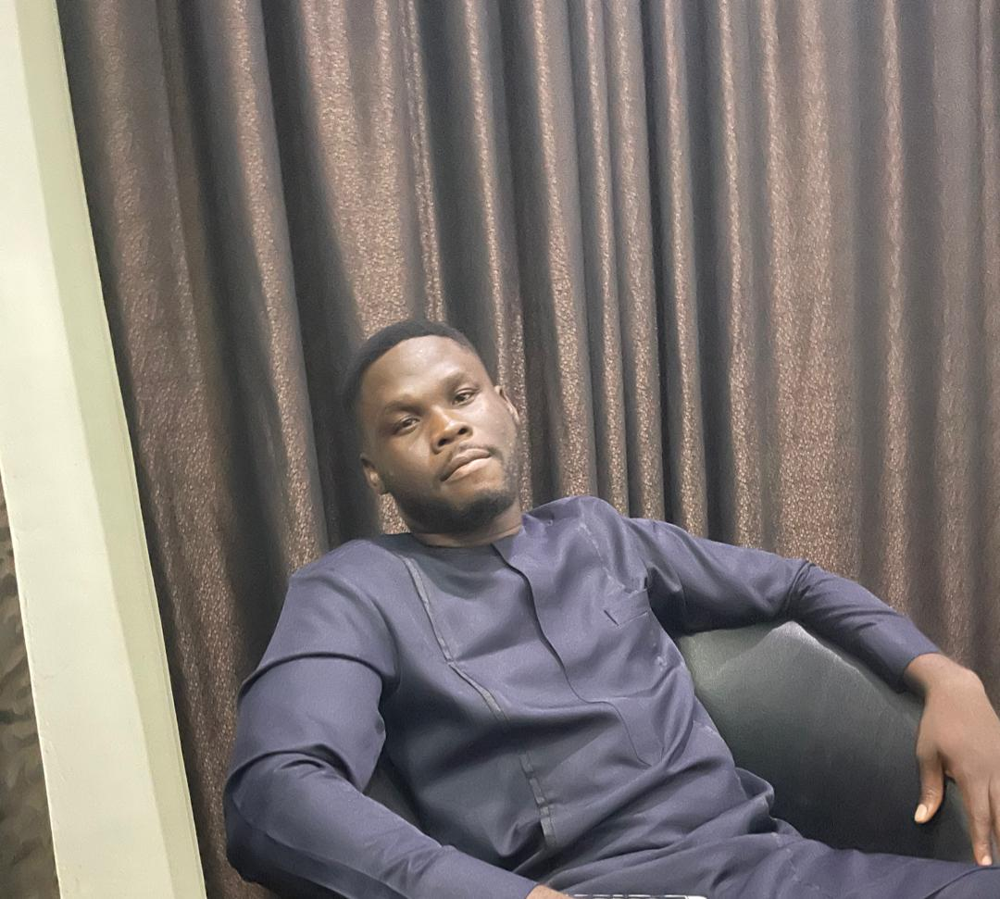

Rejoice Nzeh

About Me
I am a passionate and enthusiastic Web Developer. I am looking forward to work with brands globally to create purpose driven websites that leave a lasting impression.
Education
- Ebonyi State University - Bachelor of Agriculture (B.Agric) 2012-2017
- University secondary School Nsukka 2004-2010
Work Experience
- National Boundary Commission Abuja - Administrative Assistant November 2018 - October 2019
Duties
- Recorded incoming and outgoing fies and mails.
- Printed acceptance and rejection letters for corp members.
- clerked meetings.
- Vocational and Technical Education UNN - Farm Recorder/Manager Assistant
Duties
- Managed the farm and marketed the product.
- Recorded farm inventory and accounting.
- Carried out crop and livestock production.
Skills
- Time Management skill.
- Communication skill.
- Problem Solving skill.
- Good listener and fast learner.
- Team Management skill.
- Quality control.
- Administrative skill.
Certification
- Bachelor in Agric - Second Class Upper Division (2:1) 2017
Other